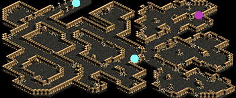
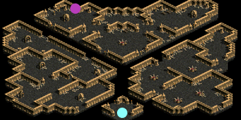
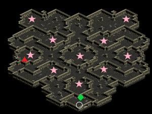

呪いの墓に建つ呪われし塔
| 制限Lv | 195～235 |
|---|---|
| 秘密の入口 | 呪いの墓B1(101,20) 呪いの墓B2(35,11) |
| 報酬 | 経験値200万5000 35万G
盗掘王の秘宝 1個 試練のクリスタルの欠片 1個 |
| ミニマップの表示条件 | マップ製作者Lv2 |
| フィールド属性低下 | なし |
| 罠 | 床罠なし 扉罠なし |
<マップ>
秘密の入口 呪いの墓B1
|  | ● ● |
… 移動ポータル … 秘密の入口 |
秘密の入口 呪いの墓B2
|  | ● ● |
… 移動ポータル … 秘密の入口 |
秘密ダンジョン 呪いの墓に建つ呪われし塔
|  | ○ ★ ◆ ▲ |
… 初期位置 … 柱 … ギーリ … 塔の守護士 |
<手順>
リーダーがギーリに話す。選択肢「お手伝い致しましょう。」
扉が開く。
リーダーが★柱をクリック。
(36,96)(20,74)(35,58)(20,29)(51,35)(81,29)(67,55)(83,73)(65,90)(50,110)
の10箇所。
クリックすると周囲のMOBにダメ2万程を与え、その分の経験値が減ってしまうので先にMOBを倒す。
リーダーがギーリに話す。
<補足>
ヴァンパイア系のディスチャージアタック（CP減少）が厄介。かなりCPを削られる。
塔の守護士の死の予告状は、カウントダウン後範囲内にいるプレイヤーを即死させるもの。抵抗不可。
ドクロマークとカウントダウン10秒が表示されたら、時間内にマークが消える所まで離れることで回避可能。
古代ヴァンパイアのミラーカーズ（反射闇ダメ）は、BISのリペントや万病などで治療可能。抵抗不可。
状態異常システム改変により全体的に敵の攻撃が厄介になっています。
| MOB | 使用スキル | 詳細 |
|---|---|---|
| 死霊魔術師 レイス ワイト （死霊魔術師Zin） |
フォースドレイン | 物理ダメ Lv低下 |
| ファイアボール | 多段火ダメ | |
| 悪口 | 全属性抵抗低下 | |
| 呪われたリッチ （ワイトZin） |
フォースドレイン | 物理ダメ Lv低下 |
| ファイアボール | 多段火ダメ | |
| 悪口 | 全属性抵抗低下 | |
| ライトニングサンダー | 風+光ダメ 移動速度低下 | |
| ヴァンパイア （ヴァンパイアZin） |
ライフドレイン | 物理ダメ HP吸収 |
| デスタッチ | 物理+闇ダメ 致命打 | |
| ブラインドアタック | 物理ダメ 暗闇 | |
| 上級ヴァンパイア （上級ヴァンパイアZin） |
ライフドレイン | 物理ダメ HP吸収 |
| デスタッチ | 物理+闇ダメ 致命打 | |
| ディスチャージアタック | CP減少 | |
| 古代ヴァンパイア （古代ヴァンパイアZin） |
ライフドレイン | 物理ダメ HP吸収 |
| デスタッチ | 物理+闇ダメ 致命打 | |
| ディスチャージアタック | CP減少 | |
| ミラーカーズ | 反射闇ダメ | |
| 塔の守護士 （ドラキュラZin） |
ライフドレイン | 物理ダメ HP吸収 |
| ディスチャージアタック | CP減少 | |
| 死の予告状 | 即死 | |
| デビルスピード | 移動・攻撃速度上昇 |
秘密ダンジョン補足
- 通称「呪い秘密」- mobを1匹も倒さずとも柱10か所に触れるだけでクリアすることも可能。
- これ以降の秘密ダンジョンは盗掘王の秘宝を出すのに適しています。
- 獲得経験値は640辺りの秘密まではおおよそ25SP分程度です。